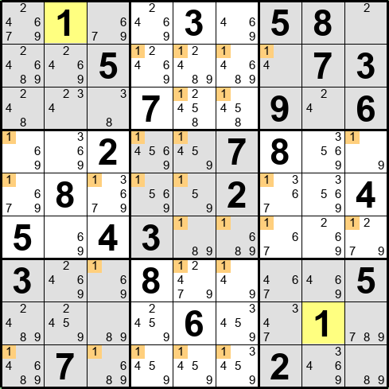

「さくさくナンプレ」は、ユーザがワンクリックで問題を作ることができるナンプレ パズル アプリです
（ルール詳細は ここ を参照）。
「数独」「Sudoku」「Number Place」などとも呼ばれます。
※「数独」は 株式会社ニコリ の登録商標です。
ナンプレは下図のように、9x9 の盤面に、1～9 の数字を縦・横・3x3ブロック内で重ならない（同じ数字が無い）ように入れていくパズルです。
ひとつの重なり無しにすべての空欄に数字を入れると、問題クリアとなります。
→
例えば、下図のように１行に同じ数字（この場合は7、赤で強調）が２つあると間違いとなります。
上図は横方向の例ですが、縦方向も同様です。
また、盤面の太線で区切られた 3x3ブロック内も数字が重なる（同じ数字がある）と間違いとなります。
本アプリでは、候補数字（メモ数字とも呼ばれる）を使わなくても適用できる解法テクニックを初級解法テクニックと呼びます。
初級解法テクニックには「フルハウス」「裸のシングル」「隠れたシングル」の３つがあります。
下図の上から4行目や中央 3x3 ブロックのように、9箇所にうち8箇所が埋まっていると、
残り1箇所は入ってない数字 （この場合は 6 と 7）に決まります。
このテクニックを「フルハウス（Full House）」と呼びます。
下図のように、ひとつの空欄に注目し、その空欄が属する行・列・ブロックに入っている数字を見ていくと、
使われていない数字がひとつだけの場合があります。
その場合は、使われていない数字（この場合は 6）が入ることが確定します。
このテクニックを「裸のシングル（Naked Single）」と呼びます。
ちなみに、上図の状態で「自動メモ」でメモ（候補数字）を全部入れると下図のようになります。
空欄にメモ数字がひとつだけある箇所は、その数字しか入らないので、裸のシングルとなります。
下図のように、横方・縦方向に同じ数字がある場合は、それらの行・列にはもうその数字が入らないので、
残ったマス目がひとつだけであれば、その数字が入ることが確定します。
このテクニックを「隠れたシングル（Hidden Single）」と呼びます。
ちなみに、メモ数字（候補数字）で見ると、下図のように 3x3ブロックに確定する数字候補が一箇所のみとなります。
本アプリの開発にあたっては多くの人にアドバイスをいただいたり、
テストプレイにより多くの問題を発見していただきました。
本当にありがとうございます。